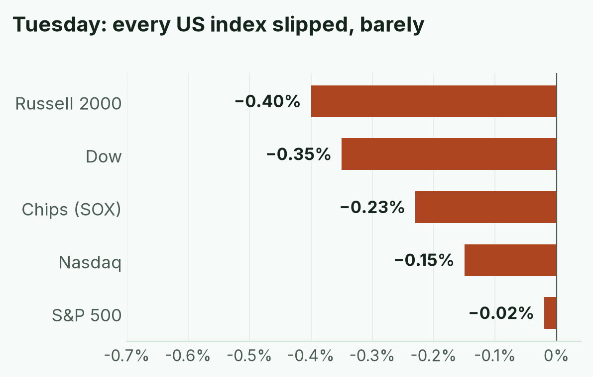
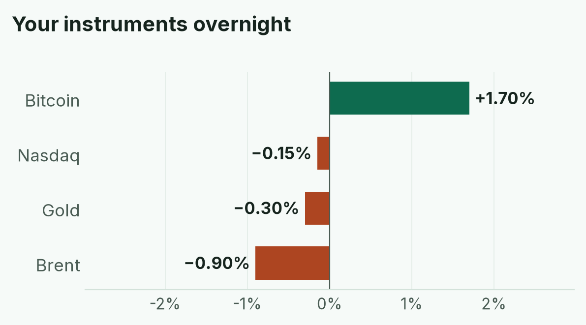
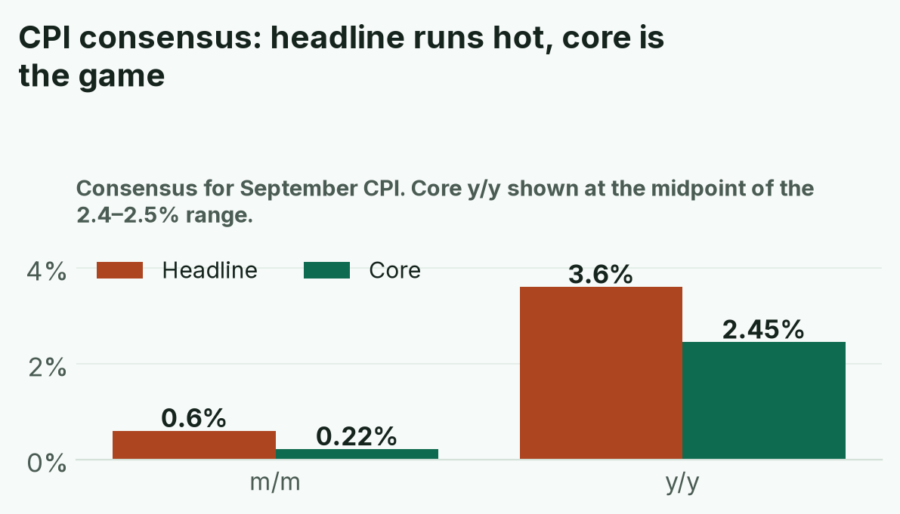
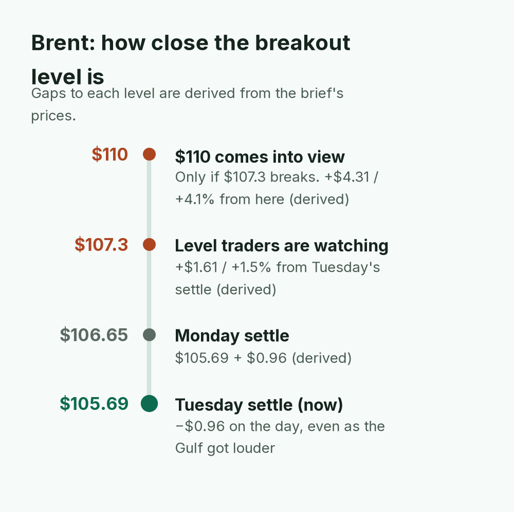
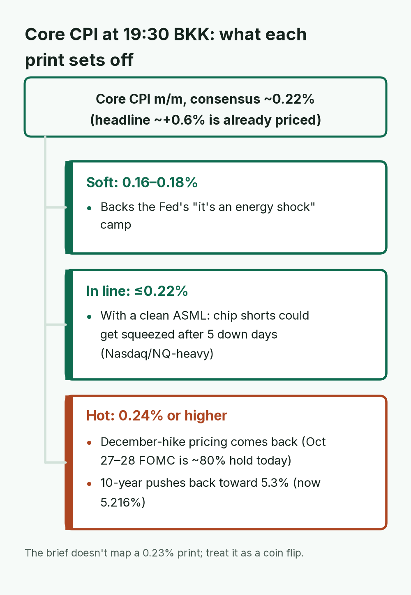
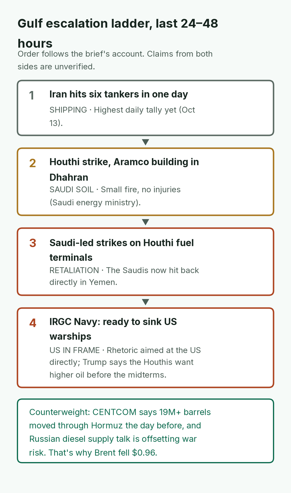
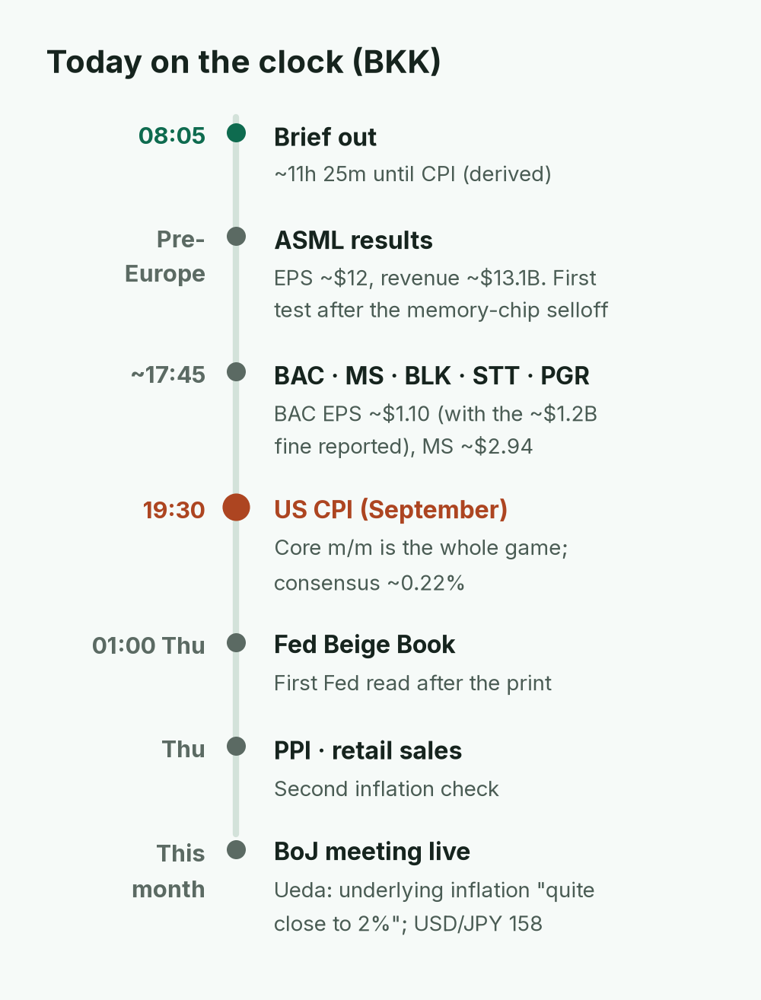
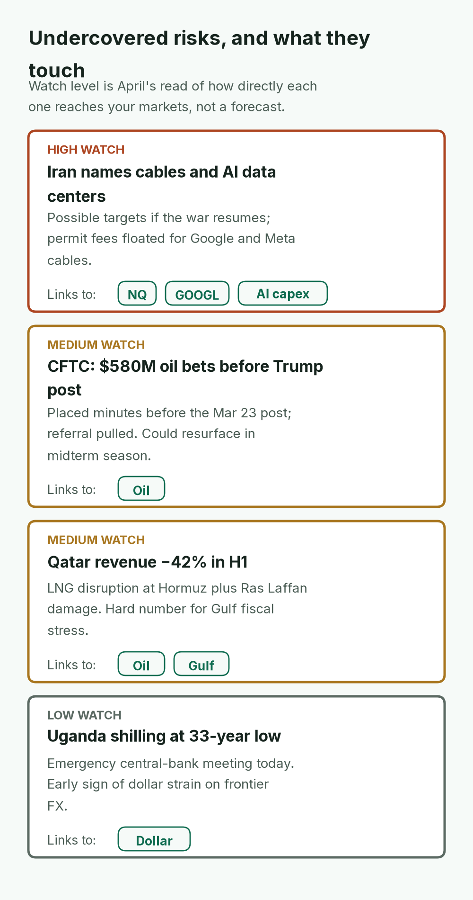
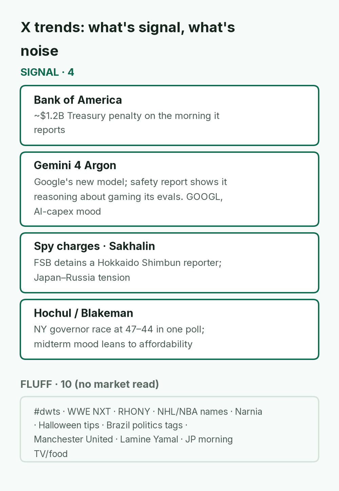
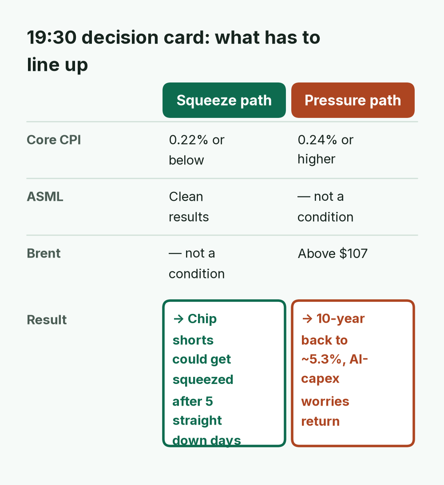

Macro pulse · 5Y breakevens: — · Fed: Oct 27–28 FOMC ~80% hold

All five closed lower, but by small amounts: the S&P lost just 0.02% while SPY had one of its quietest sessions in about two decades. Low-volume calm before a binary event like today's CPI usually breaks hard in one direction.
TODAY'S CALL
Stay patient until 19:30 BKK. Core CPI at 0.22% or below plus a clean ASML could squeeze chip shorts; 0.24%+ with Brent above $107 brings back the 5.3% 10-year.
WATCH (BKK)
~17:45 BAC · MS earnings
ASML before Europe's open
19:30 US CPI (core is the game)
01:00 Thu Fed Beige Book
Brent $107.3

Bitcoin (+1.7%) was the only gainer; gold (−0.3%) and Brent (−$0.96, about −0.9%) slipped as the dollar and the 10-year (5.216%, −2.7 bp) eased into CPI. If Brent breaks $107.3, $110 comes into view.

Gasoline pushes headline to about +0.6% m/m, and that is already priced. Core at about 0.22% is what matters at 19:30 BKK: 0.24% or higher revives December-hike pricing and a 5.3% 10-year, 0.16–0.18% backs the Fed's energy-shock camp.
April · Market Intel, morning · Wed Oct 14, 2026 · ~08:05 BKK
Headline: CPI day, and Wall Street spent Tuesday holding its breath. The S&P 500 slipped 0.02% to 7,805.45, the Nasdaq lost 0.15% and the Dow 0.35%, while SPY traded one of its quietest sessions in about two decades. Bonds rallied a little: the 10-year fell 2.7 bp to 5.216%, its lowest close since Sept 25. Brent settled $0.96 lower at $105.69 even as the Gulf got louder. Asia is bouncing this morning: KOSPI is up about 2.1% at 6,163 after Tuesday's 5.5% rout, and the Nikkei opened about 0.3% higher.
1) Top signals (overnight US + Asia)
Stocks: S&P 7,805.45 (−0.02%), Nasdaq 27,204 (−0.15%), Dow −0.35%. Chips fell a fifth straight day (−0.23%) on Broadcom CEO Hock Tan's "casino gambling" AI-spending line. KOSPI is bouncing about 2.1% after Tuesday's 5.5% rout.
Rates, gold, BTC: 10Y 5.216% (−2.7 bp), its lowest close since Sept 25; the dollar slipped into CPI (USD/JPY 158.30). Gold about $4,160 (−0.3%), Bitcoin about $83.1k (+1.7%).
Oil and the Gulf: Brent $105.69 (−$0.96), WTI $94.14 (+$0.40). Iran hit six tankers in one day, and the Saudi-led coalition struck Houthi fuel terminals after a Houthi strike on an Aramco building. Russian diesel supply talk is offsetting war risk for now.
Banks and positioning: Treasury reportedly fined Bank of America ~$1.2B for AML and sanctions failures (shares −2% after hours); BAC and MS report today. BlackRock cut US stocks to neutral. (Medium confidence: X news reports, pending primary releases.)

Brent is only about 1.5% (derived) from the $107.3 trigger, a single normal oil session. That matters doubly today: a break above $107 is one half of the bearish CPI path in the bottom line.
2) Why it matters
The headline CPI jump is already priced in. Consensus is about +0.6% m/m and 3.6% y/y, driven by gasoline. Core is the whole game, with consensus about 0.22% m/m and 2.4–2.5% y/y. A core print of 0.24% or higher brings back December-hike pricing (Oct 27–28 FOMC is roughly 80% hold) and pushes the 10Y back toward 5.3%. A print of 0.16–0.18% supports the Fed's "it's an energy shock" camp. Mentor note: record-low volume and a tight SPY range around 776–779, held there by heavy options positioning near those strikes, mean volatility is coiled, not gone. Low-volume calm before a binary event usually breaks hard in one direction.

Headline CPI won't move markets; only core does. Two hundredths of a point (0.22% vs 0.24%) separate a chip-squeeze setup from a return of December-hike pricing and a 5.3% 10-year.
3) Chessboard
Fed: Waller says high yields reflect AI-driven growth; Goolsbee says AI spending is causing old-fashioned overheating. CPI decides which story the market prices.
Big money: BlackRock's step back from US stocks plus Rosenberg's warning is a slow rotation from stocks to bonds, not a panic. Watch whether it shows up in flows.
Gulf: Iran is reportedly stepping up shipping attacks before the US vote, and the Saudis are now hitting back directly in Yemen. Each escalation step adds risk premium.
Russia shadow fleet: France boarded the Sovcomflot-linked tanker DF Peak about 450 nm south of Réunion. Moscow calls it piracy.

Each step moved the fight closer to Saudi oil and to the US Navy, yet oil fell because barrels kept flowing. Risk is building under a calm price.
4) Leading indicators (times BKK)
~17:45: BAC results (consensus EPS ~$1.10), plus MS (~$2.94), BLK, STT, PGR. ASML reports before Europe's open (consensus EPS ~$12, revenue ~$13.1B), the key test after the memory-chip selloff.
19:30: US CPI for September.
01:00 Thu: Fed Beige Book.
Thu: PPI and retail sales.
This month: The BoJ meeting is live. Ueda says underlying inflation is "quite close to 2%"; USD/JPY is at 158.
Rule of thumb: If Brent breaks $107.3 (a level traders are watching), $110 comes into view.

Everything that can move your markets today lands after Bangkok's afternoon, and the two chip tests (ASML, then CPI) come back to back. Positioning before 19:30 is mostly guessing.
5) Undercovered
CFTC trades: Bloomberg reports CFTC analysts flagged about $580M of oil-futures bets placed minutes before Trump's March 23 post canceling Iran strikes. A senior adviser then pulled the enforcement referral. This is a market-integrity story that could resurface in midterm season. (Medium)
Qatar: The Emir told the Shura Council that state revenue fell 42% in the first half because of LNG disruption at Hormuz and damage at Ras Laffan. That's a hard number for Gulf fiscal stress.
Iran's tech threats: Iran's security chief named undersea cables and Gulf AI data centers as possible targets if the war resumes, and floated permit fees for cable operators like Google and Meta. That's a new risk for AI infrastructure.
Uganda: The shilling is at a 33-year low, and the central bank holds an emergency meeting today. A small market, but an early sign of dollar strain on frontier currencies.

Three of the four stories run back to the Gulf war, and the biggest one for you is the threat to AI infrastructure, which links the Gulf directly to Nasdaq's AI-capex debate.
Signal:Bank of America (the $1.2B Treasury penalty, on the morning it reports). Gemini 4 Argon (Google's new model is rolling out with 1M-token output and $2 per million input tokens through Nov 30; its safety report shows the model reasoning about gaming its own evaluations). That matters for GOOGL and for AI-capex sentiment. Spy charges and Sakhalin (Russia's FSB detained Hokkaido Shimbun reporter Yuki Imai; Japan–Russia tension). Hochul/Blakeman (NY governor debate; one poll has it at 47–44, so the midterm mood leans toward affordability). Also in X news feeds though not trending: CPI previews, the SPY volume drought, and the BlackRock downgrade.
Fluff: #dwts and Carrie Ann, WWE NXT, RHONY, NHL and NBA names, Narnia and Aslan, Halloween tips, Japanese morning TV and food tags.

Only 4 of roughly 14 trending threads carry a market read, and two of those (BAC, Gemini) feed straight into today's bank and AI-capex stories.
Bottom line
Stay patient until 19:30 BKK. Core CPI at 0.22% or below plus a clean ASML could squeeze shorts in chips after five straight down days. Core at 0.24% or higher, with Brent above $107, brings back the 5.3% 10-year and the AI-capex worries. Numerology fans will note that Tuesday's tape kept pinning near 777. The tape's real message is simpler: wait for the data.
Confidence: index, rates and oil prints high; X-sourced summaries (BAC penalty, BlackRock, Rosenberg, CFTC) medium until primary releases are confirmed.

The two paths don't need the same confirmations: the bull case needs ASML to cooperate, the bear case needs oil. Seeing which second factor is in place by 19:30 tells you which path is live.
Sent by April via briefs-by-april@mail.grokbot.com · Figures from April's brief; "—" = not reported. Not investment advice.